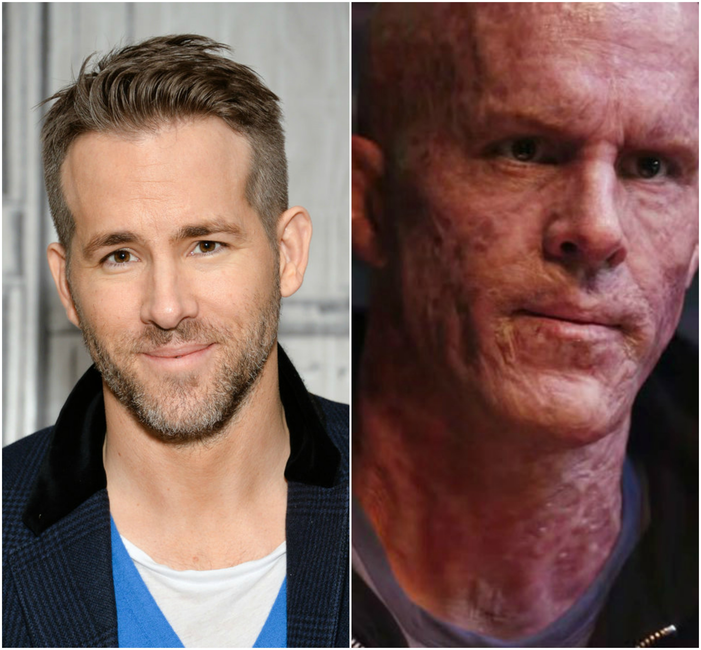

<!-- <!DOCTYPE html>
<html lang="en">
<head>
    <meta charset="UTF-8">
    <meta name="viewport" content="width=device-width, initial-scale=1.0">
    <meta http-equiv="X-UA-Compatible" content="ie=edge">
    <link rel="stylesheet" href="diseñoinformativo.css">
    <title>DISEÑOINFORMATIVOBLOG</title>
</head>
<body>
    <a href="./paginadeadpool.html">ATRAS</a>
 
    <div class="titulo"> <h1>Deadpool (pelicula)</h1></div>
  <div class="imagen"> </div>

   <div class="letrasuno"> <p>Deadpool es una película de superhéroes estadounidense basada en el personaje de Marvel Comics del mismo nombre y dirigida por Tim Miller. La película es un spin-off derivado de los X-Men protagonizada por Ryan Reynolds, Morena Baccarin, Ed Skrein, T. J. Miller, Gina Carano, Leslie Uggams, Brianna Hildebrand y Stefan Kapičić. En Deadpool, después de ser sometido a un experimento que deja a Wade Wilson con nuevas habilidades y con un retorcido sentido del humor, Wilson persigue al hombre que casi destrozó su vida. La película se estrenó en IMAX.</p></div>
  <div class="letrados"><p> En febrero de 2004, el desarrollo de la película comenzó con New Line Cinema. Sin embargo, en marzo de 2005, New Line Cinema puso la película en cambio y 20th Century Fox se interesó. En mayo de 2009, 20th Century Fox prestó la película a los escritores, y en abril de 2011, Miller fue contratado para dirigirla. La fotografía principal comenzó en Vancouver, Canadá en marzo de 2015.</p> </div>

  <h2>argumento</h2>
   
  <div class="letratres"><p>Wade Wilson es un mercenario que pasaba su tiempo en la ciudad de Nueva York protegiendo a las adolescentes de los posibles acosadores y asistía a un bar en el que los ebrios solían organizar peleas denominadas Pozos de la Muerte. Una noche en el bar, Wade conoce a Vanessa Carlysle y se convierten en novios por casi un año, durante ese tiempo deciden celebrar su amor, teniendo relaciones sexuales en todas las festividades (excepto en la Pascua de Resurrección). Cuando estaban teniendo relaciones sexuales una noche de navidad, Wade le propone matrimonio a Vanessa, luego de repente se derrumba y es diagnosticado con cáncer terminal aligado a los pulmones, próstata y cerebro, lo que hace prácticamente imposible la operación. A pesar de que Vanessa decidió no rendirse y buscar soluciones, Wade sólo quiere aprovechar el poco tiempo que le queda.</p></div>
  <div class="letracuatro" ><p>Una noche en el bar donde conoció a Vanessa, se encuentra con un extraño hombre al que llama “agente Smith”, un reclutador de un programa secreto. Le ofrece una cura experimental para el cáncer que también lo convertiría en un ser dotado de superpoderes, al principio él rechaza al hombre y se va. Pero desesperado por vivir, Wade deja a Vanessa en medio de la noche y regresa para someterse al procedimiento. Así conoce a Francis Freeman (quien se hacía llamar Ajax) y a su asistente Angel Dust. Francis le inyecta a Wade un suero especial y Angel lo tortura durante días con el fin de desencadenar una mutación. Tras semanas sin ningún éxito, Wade es atado a una cámara hermética en la cual pasa dos días por insultar a Francis. La caída de su oxígeno activa un factor de curación que elimina su cáncer, pero desfigura gravemente su piel y su rostro en el proceso. Wade escupió un cerillo que Angel llevaba en la boca y había conseguido quitárselo previamente cuando le dio un golpe en la cabeza. Usando el cerillo prende fuego a la cámara, se escapa desatando un incendio e intenta matar a Francis, sólo se detuvo cuando él afirmó que es el único que sabe como curar la desfiguración de Wilson. A continuación, Francis lo clava en el suelo atravesándolo con una barra de refuerzo y es dado por muerto en la destrucción del laboratorio.</p></div>
  <div class="letracinco"><p>Wade sobrevive y regresa a Nueva York, pero decide mantenerse lejos de Vanessa porque teme que su aspecto la espante, sin embargo está convencido de que Francis lo puede arreglar. Wade se muda al departamento de una anciana invidente llamada Blind Al y se reúne con su compañero de barra Jack Hammer “Weasel”, mientras habla con él, planea su venganza contra Francis, con el consejo de su mejor amigo, se convierte en un vigilante enmascarado llamado "Deadpool", comenzando la caza de Francis y el desmantelamiento de su organización. Wade persigue y mata a todo aquel que tenga relación con Francis en busca de información. Al principio, a Wade se le hacía difícil lavar las manchas de sangre de su disfraz cuando se enfrentaba a distintos lacayos que le disparaban todo el tiempo, un día en la lavandería Al le aconseja vestir de rojo, entonces Wade se hace un traje rojo para evitar los problemas de las manchas de sangre</p></div>
  <div class="letraseis"><p>Tras rastrear una serie de conexiones de diversos sindicatos, Deadpool ataca a un convoy de coches en una autopista lanzándose directo al interior de una camioneta, donde mata a todos los hombres y al final es acorralado por toda la pandilla. En la Mansión X, Coloso ve los noticieros que hablan sobre Deadpool y junto a su compañera, Negasonic Teenage Warhead toman el Jet de los X-Men para tratar de convencer una vez más a Deadpool de unirse a los X-Men. En el lugar del asalto, Deadpool logra fácilmente matar a varios de los hombres de Francis con dos pistolas que sólo tienen doce balas, luego pone sus manos sobre Francis, exigiendo una cura para su desfiguración. La confrontación es súbitamente interrumpida por los X-Men, Coloso y Negasonic Teenage Warhead, que quieren que se una al equipo. Su intervención permite que Francis escape, y cuando Coloso esposa a Deadpool para llevarlo a la Mansión X, Deadpool se corta su propia mano y se escapa cayendo en un camión de basura, luego llega al departamento que comparte con Al</p></div>
  <div class="letrasiete"><p>La noche siguiente, Wade decide ir a visitar a Vanessa por consejo de Al, pero cuando llega con Weasel al club stripper donde ella trabaja, Wade descubre que ha sido secuestrada por Francis quien la engañó haciéndose pasar por Wade, después Francis lo contacta usando el teléfono móvil de Vanessa y le dice que debe reunirse con él en un portaaviones desarmado en un depósito de chatarra. Wade, bastante furioso por lo ocurrido, decide que ya es hora de acabar con Francis y junto a una mochila llena de armas, se dispone a ir a pelear. <br> <br>

        Deadpool va a la Mansión X para convencer a Coloso y a Negasonic de ayudarlo a rescatar a Vanessa y a cambio, consideraría unirse a los X-Men. El trío toma un taxi hasta el depósito de chatarra, donde Francis mantiene a Vanessa encerrada en una de las cámaras de aire. Una vez fuera del taxi, con los tres listos para atacar, Negasonic le hace notar a Deadpool que no trae su mochila con las armas, la cual se le olvidó en el taxi del conductor Dopinder, entonces Deadpool decide simplemente pelear con sus katanas. <br> <br> La pelea comienza cuando Francis manda a Angel Dust a pelear y golpea a Coloso, luego Deadpool mata a todos los soldados que se atraviesan en su camino hacia Francis, mientras Coloso tiene una dura batalla con Angel. A continuación, Negasonic ayuda a Deadpool a llegar hacia Francis impulsándolo hasta el portaaviones donde Deadpool y Francis se involucran en un sangriento combate cuerpo a cuerpo. Durante la batalla, Vanessa logra salir de la cámara, la cual la estaba asfixiando gracias a una espada que quedó clavada, luego Negasonic utiliza su poder para destruir el portaaviones. Deadpool llega a imponerse en la lucha salvando a Vanessa, mientras Coloso y Negasonic derrotan a Angel. Deadpool ahora tiene a Francis a su merced y le exige que le regrese su rostro a la normalidad, pero Francis admite que no existe ninguna cura para la desfiguración de Wade y le dice que tendrá que acostumbrarse a vivir con el rostro deformado, ya que a diferencia del cáncer, eso no tiene cura. A pesar de que Coloso insiste en perdonar a Francis y ser un verdadero héroe, Deadpool finalmente mata a Francis de un tiro en la cabeza, consumando su venganza y le dice a Coloso que si ser superhéroe se basa en dejar vivir a psicópatas como Francis, entonces él jamás será un superhéroe. Coloso y Negasonic deciden irse, justo cuando Deadpool se dispone a tener un momento a solas con Vanessa. Wade permite que Vanessa le quite la máscara y le muestra su nueva cara. A pesar de que ella está enojada porque él la dejó, Vanessa le dice que no le importa su nueva apariencia, ya que en el fondo es el hombre que todavía ella ama, siempre y cuando hagan lo que tanto les gusta y se reconcilian con un beso. <br> <br>
        
        En una escena post-créditos, Deadpool aparece en bata y le habla a la audiencia, preguntándole porque siguen todavía en la sala cuando la película ya ha terminado y los exhorta irse a casa, luego les pregunta si esperan ver un avance de Deadpool 2 les que contesta que el estudio no tiene dinero para eso, también pregunta si esperaban ver a Sam Jackson con su parche en el ojo y les menciona que solo perdieron su tiempo esperando y les dice que se vayan. Después de un breve corte, vuelve para a anunciar que en la secuela contará con la participación de Cable, sugiriendo que podría ser interpretado por Mel Gibson, Dolph Lundgren o Keira Knightley pero que esto último es un secreto. También le advierte a la audiencia de no dejar su basura en la sala de cine, ya que eso es de muy mala educación, y la película termina con el sonido "chikah-chi-ka" por parte de el.</p></div>


        <div class="personajeuno"><p1>Ryan Reynolds como Wade Wilson / Deadpool </p1> <br>
              <p> Un mercenario bromista con un factor de curación acelerada pero con severas marcas desfigurantes en todo su cuerpo luego de ser sometido a un experimento que forzó el proceso de mutación en él.</p></div>
           <divi class="imagenuno"> </div>
            <div class="imagendos"></div>
            <div class="imagentres"> </div>
            <div class="personajedos"><p1> Morena Baccarin como Vanessa Carlysle / Copycat</p1> <br>
                <P>Una escort y la prometida de Wilson. Baccarin la describió como "peleona" y no como una damisela en apuros. El personaje fue inicialmente diseñado como una "prostituta típica", pero Baccarin trabajó con los equipos de disfraces y maquillaje para hacer su apariencia más estratificada.4​ La película no explora la segunda identidad "Copycat" del personaje en el cómic ya que los escritores querían enfocarse en Deadpool,5​ aunque el diseñador de maquillaje Bill Corso incluyó algunas referencias al aspecto azul que Copycat tiene en los cómics</P></div>
            <div class="imagenunoo"> </div>
            <div class="imagendoss"></div>
           
            <div class="personajetres"><p1>Ed Skrein como Francis / Ajax</p1> <br>
                <p> Un miembro mutado artificialmente del programa que creó a Deadpool, él no siente dolor y tiene una fuerza mejorada.</p> </div>
<div class="imagenunooo"></div>
<div class="imagendosss"> </div>
 <div class="subtitulotrailer"><h1>TRAILER</h1></div>
<div class="videouno"><video src="video/video.mp4" width="700" controls></video></div></div>

                
</body>
</html> -->